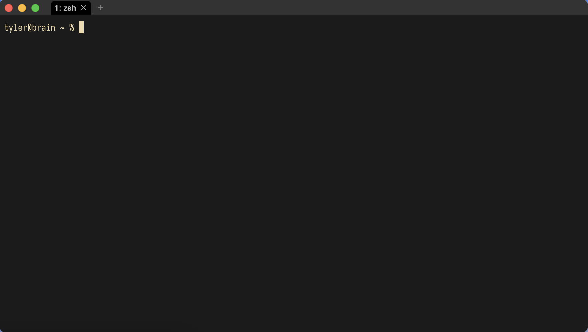
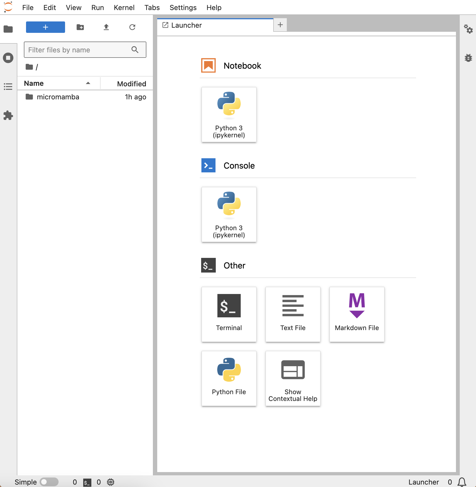

1. Getting Started#
This chapter introduces fundamental concepts for working with code. We begin with the Unix command line and environment management, after which we will turn to an overview of the Python programming language.
Prerequisites: If you are using Windows, install Git for Windows. It comes with Git Bash, a Unix-style command-line interface
Credits: Portions of this chapter are adapted from the UC Davis DataLab’s Introduction to the Command Line, Introduction to Remote Computing, and Python Basics
1.1. Command Line Basics#
Most modern coding platforms follow the conventions of mainstream computing, using a graphical user interface (GUI) to display information and accept user input. But there is still real value in knowing the basics of the command-line interface (CLI), which relies solely on text input. Learning how to use the CLI will teach you a great deal about how your computer works, and there are still several instances where CLIs are the only point of access to a system.
The CLI contains three main parts:
A terminal: an environment you use to send/receive information to/from your computer
A shell: a program that executes commands you enter into the terminal
The command line: where you enter the commands that the shell executes
As we move through this chapter, keep one key thing in mind: a CLI is just another mode of interaction with your computer. Everything you can access through a windowing system on a GUI is also accessible with a CLI.
1.1.1. Launching a command-line interface#
MacOS comes with a pre-installed CLI called Terminal. To launch it, go to:
Applications -> Utilities -> Terminal
Windows users will use Git Bash. To launch it, do the following:
Windows Start Menu -> search "Git Bash"
Or:
Windows Start Menu -> Programs -> Git Bash
You should see something like this when your CLI launches:

The window above shows a basic command line with a prompt. A prompt is an input field where you type your commands, and it is prepended with useful information about your computer:
First,
tyler@braintells us the current user (tyler) and the current computer (brain). That may seem like redundant information, but with the command line it’s possible to log in to other computersThe prompt also tells us where we are on this computer’s file system. Right now we are at
~. We’ll discuss what this symbol means later. For now, just keep in mind that this is where you should look to get your bearingsFinally, we see
%. It is an indicator that the CLI is waiting for input
Tip
In the following sections, we will display CLI commands by prepending them with
an indicator character, $. You do not need to type this character yourself,
it’s just to signal that a cell shows a command.
1.1.2. Input and interactions#
Time to enter some commands. This is simply a matter of typing them in after
the prompt and pressing Return/Enter.
For example, echo will print back to screen any text that you supply the
command:
$ echo "Hello world!"
Hello world!
You can see what files and folders are in your current location with ls
(“list”):
$ ls
_build _config.yml _toc.yml chapters data env img scratch src
Send ls the name of a subfolder to show its contents:
$ ls chapters
01_getting-started.md 04_ngram-models.md 07_intro-to-llms.md index.md
02_python-basics.md 05_vectorization.md 08_bert.md
03_data-analysis-basics.md 06_vector-spaces.md 09_gpt.md
Want more information? Modify the base functionality of ls—or any
command—with flags. We do this by adding a dash - and then a letter, or
a combination of letters, directly after the dash. Below, we send ls flags to
have it show all contents (a) with long-formatted output (l) in a
human-readable fashion (h):
$ ls -alh
drwxr-xr-x 13 <username> staff 416B May 25 01:46 .
drwxr-xr-x 5 <username> staff 160B May 8 12:58 ..
drwxr-xr-x 14 <username> staff 448B May 25 01:35 .git
-rw-r--r-- 1 <username> staff 20B Apr 22 15:44 .gitignore
drwxr-xr-x 6 <username> staff 192B Apr 25 22:01 _build
-rw-r--r-- 1 <username> staff 501B Apr 21 23:23 _config.yml
-rw-r--r-- 1 <username> staff 583B Apr 22 10:10 _toc.yml
drwxr-xr-x 12 <username> staff 384B May 30 13:00 chapters
drwxr-xr-x 11 <username> staff 352B May 17 17:16 data
drwxr-xr-x 5 <username> staff 160B May 30 12:37 img
drwxr-xr-x 5 <username> staff 160B May 25 01:35 src
Long-formatted output shows you metadata about files and folders, including
information about the their owner/group (<username> and staff), their
permissions (those strings of r’s, w’s, and x’s), their size, and the
last date they were modified. We won’t discuss permissions in depth, but know
that they dictate who can read r, write w, and execute x files.
Any file or folder prepended with . in its name will be hidden by default on
your computer. But using the all -a flag, as we did above, will show them:
., .., .git, and .gitignore. The first two are special notations for
navigating your computer, which we discuss in the next section. The third,
.git, is a subfolder that stores version control information about this
reader, and .gitignore is a dotfile. Dotfiles often contain various
configuration settings that people use to customize their computers. In this
case, .gitignore controls what parts of this folder version control should
ignore.
1.1.3. Command-line syntax#
Depending on your computer and CLI, the above output may differ slightly, but
in general the basic presentation and functionality will be the same. Commands
use a space to delimit their different components, and flags are called with
- to modify those commands. When put together, we can generalize these
components to a command-line syntax:
$ <command> <optional flags> <file/data on which to run the command>
One caveat: since spaces are a meaningful part of the command-line syntax, file
names with spaces in them can cause problems. You’ll need to escape these
names with \.
This will throw an error:
$ <command> file name.txt
But this will not:
$ <command> file\ name.txt
Be sure to read error messages when you see them. While the CLI is often quite mute, it will do its best to show you what you did wrong when an error arises. Below, for example, the shell explains that it cannot find a command, which actually stems from a typing error:
$ lschapters
zsh: command not found: lschapters
Likewise, here, ls cannot find the requested folder because it does not
exist:
$ ls storage
ls: storage: No such file or directory
One last thing about general CLI usage. Sometimes, you need to stop a process
immediately. Use CTRL+C to interrupt it. But keep in mind that, for the
most part, it isn’t possible to undo a command. Take care to know exactly what
you’re running and what you’re running it on, especially as you get acclimated
to the CLI.
1.1.4. Getting help#
There are dozens of commands available to you on your computer, and you can install even more. If you’d like to see an overview of some of the most common commands, take a look at Valerie Summet’s Unix cheat sheet.
You can also use man (“manual”). This opens the manual page for another
command. Here you will find usage information, including what flags a command
accepts.
$ man ls
LS(1) General Commands Manual LS(1)
NAME
ls – list directory contents
SYNOPSIS
ls [-@ABCFGHILOPRSTUWabcdefghiklmnopqrstuvwxy1%,] [--color=when] [-D format] [file ...]
DESCRIPTION
For each operand that names a file of a type other than directory, ls displays its name as well as any requested,
associated information. For each operand that names a file of type directory, ls displays the names of files
contained within that directory, as well as any requested, associated information.
If no operands are given, the contents of the current directory are displayed. If more than one operand is given,
non-directory operands are displayed first; directory and non-directory operands are sorted separately and in
lexicographical order.
The following options are available:
<...>
A shortened version of this output is often available by flagging a command
with --help. Sometimes, too, you will need to know the version of the command
you’re using. You can find this information with --version, or --v.
1.2. Directory Structures#
Remember that a CLI is just another mode of interaction with your computer. This section will solidify that idea by showing you how to navigate your computer’s directory structure, the arrangement and organization of its data.
1.2.1. Paths#
A directory structure is like a map of all the locations you can navigate on your computer. These locations are directories (or folders), and within them are files (chunks of data). Each file has an address on this map, and there is a path that leads to it. The windowing systems of modern computers manage these paths automatically when you click around on your computer, but it’s also possible to navigate on the command line. You’ll just need to specify paths yourself.
In a Unix environment, we do this with the following syntax:
/this/is/a/path/to/your/file.txt
This is called a file path. It threads through multiple directories to
point at your desired file, file.txt.
Note
Non-Unix environments, like Windows DOS, use \ instead of /:
C:\this\is\a\path\to\your\file.txt
This is why Windows users had to download Git Bash. It emulates Unix-style functionality on those machines. Generally speaking, the Unix command line is far more pervasive than DOS, so you’ll find yourself using Unix-style commands/syntax more frequently.
1.2.2. Path hierarchies#
A directory structure is hierarchical. Directories are “above” or “below”
one another, and it’s crucial to get a sense of this so that you can navigate
your computer. In the file path above, every / demarcates a new one of these
directory levels.
Use pwd (“print working directory”) to display your current location using
the same format:
$ pwd
/Users/tyler/2024_dtl_lm-interpretability
Note that this path begins with /. This is the top-most directory in your
computer, called the root. It’s like the trunk of a tree: every directory
branches off from it. But, to add some complications, directories can also
branch off one another. Whenever you make a new directory, you’ve created
another branch in this tree, and this branch is at the same time a branch of
root and a branch of whatever directory you’re currently in.
For example, here is the structure of this reader’s data directory:
data
├── datasets
├── models
│ └── bert_blurb_classifier
│ └── final
└── texts
├── dickinson
│ └── poems
└── nyt
└── obituaries
See the branching paths?
Note
DOS again diverges from Unix in its representation of the root. For the former,
the root is usually called C: or D:, which designates the actual device on
which your data is stored.
1.2.3. Absolute vs. relative paths#
No matter the operating system, there are two different ways to specify a file
path on the command line. Recall our pwd output above:
$ pwd
/Users/tyler/2024_dtl_llm-interpretability
It starts with root /. When you see a path like this, it’s showing you the
full, or absolute, location of a directory or file. By typing out this
path, you can navigate directly to this location, regardless of where you are
on your computer.
By contrast, a relative path is context-specific. It depends on where you are in your computer’s directory structure. Unix uses shorthand to denote this location:
.denotes the current location in your computer..denotes the directory above that location
Remember seeing these earlier with ls -alh? Your computer tracks locations by
placing these two symbols in every directory you create. Thus, this enables you
to use this shorthand notation to avoid typing out the entire path to a file.
This is useful if you’re a ways off from root, or if, for a coding project, you
are using files that rely on a specific directory structure, which could be
ported to someone else’s computer.
Besides . and .., there is also ~, which we saw in the CLI prompt
earlier. This denotes your home directory, which your computer uses to
store data and configurations that are specific to you. Use cd (“change
directory”) in combination with ~ to return to home, no matter where you are
in your computer’s directory structure.
$ cd ~
Take a look at your prompt: it should list out ~ in the location position.
1.3. Environment Setup#
Processes—applications, background tasks, code, etc.—run on your computer in a computer environment. These environments are collections of hardware, software, and various configurations, and the latter two are portable between computers (ideally). This portability is great for when you get a new computer and want to recreate your current environment, whether by replicating certain settings or installing external software; but the real power of porting environments stems from the ability to freeze them and share them with others.
You’ll often have to do this when writing code, because some people may not have certain pieces of software that you have on your computer. And, as we’ll discuss a little later on, writing code often relies on specific versions of programming language packages, which can conflict with one another—and cause massive headaches. Using an environment manager to encapsulate your setup will help you circumvent such problems and let others run your code as you intended.
1.3.1. Micromamba#
We will use micromamba to manage environments for the work that lies
ahead. It allows us to create new virtual environments and install software
into them, including different versions of Python and associated packages.
micromamba is based on mamba, which is in turn based on
conda; the three are drop-in replacements for each another, so when
you see discussions about one, know that the topic will likely port over to the
others.
The micromamba documentation (linked above) will always feature the most
recent version of installation instructions. As of this writing (summer 2024),
installing via the script option in a CLI works like so:
$ "${SHELL}" <(curl -L micro.mamba.pm/install.sh)
Running this command will download and install a script. During installation, you’ll be asked a series of questions:
Micromamba binary folder? [~/.local/bin]: Where do you want to install the program? Select the default by pressingEnter/ReturnInit shell (bash)? [Y/n]: Configure your shell formicromamba? EnterYConfigure conda-forge? [Y/n]: Default to theconda-forgerepository when searching for packages to install? EnterYPrefix location? [~/micromamba]: Where would you like to install environments? The default is under your home directory, which is fine. PressEnter/Return
With these options set, reload your shell to initialize micromamba:
$ source ~/.zshrc
$ source ~/.bashrc
Tip
You don’t need to run source to initialize micromamba every time you open
your CLI. Your CLI actually runs this command when on start up—we just have
the program running already.
Now check the version of micromamba:
$ micromamba --version
1.5.8
If you see output like the above, you’re set!
Time to create a new environment. Generally, it’s a good idea to make a new
environment for every project. Below, we make one called practice.
$ micromamba create --name practice
Empty environment created at prefix: <path/to/practice>
Use the env list subcommand to list out all environments:
$ micromamba env list
Name Active Path
──────────────────────────────────────────────────────────
practice <path/to/micromamba/envs/practice>
Activate an environment with the activate <enviroment> subcommand.
$ micromamba activate practice
Note your prompt. It will update to reflect that you’re in a micromamba
environment:
(practice) you@your_computer ~$
Let’s install some software. Below, we install ripgrep, which enables
you to search text files in a directory:
$ micromamba install ripgrep
When prompted, enter Y to confirm that you’d like to install the program.
Now, use ripgrep to search for “NLP” in chapters:
$ rg -i "NLP" chapters
chapters/06_vector-spaces.md
36: [Natural Language Processing for Data Science][nlp]
40:[nlp]: https://ucdavisdatalab.github.io/workshop_nlp_reader
125:reigning metaphor of NLP, a space of this sort is a stand-in for meaning: the
190: in the same direction as the first. Most vector operations in NLP use the
674:to be made available by the Stanford NLP group. It has been trained on a 2014
680:[glove]: https://nlp.stanford.edu/projects/glove/
chapters/01_getting-started.md
650:Now, use `ripgrep` to search for "NLP" in `chapters`:
653:$ rg -i "NLP" chapters
657:309:all repeated tokens. The result will be a set of in NLP are called **types**:
660:666:Now, use `ripgrep` to search for "NLP" in `chapters`:
661:669:$ rg -i "NLP" chapters
662:673:648: in the same direction as the first. Most vector operations in NLP use the
663:676:309:all repeated tokens. The result will be a set of in NLP are called **types**:
664:679:664:Now, use `ripgrep` to search for "NLP" in `chapters`:
665:680:667:$ rg -i "NLP" chapters
666:694:$ rg -i "NLP" chapters
667:863:machine learning/AI and natural language processing (NLP): most people are
668:1272:nlp = "natural language processing"
669:1273:nlp.title()
670:1279:nlp.count("g")
671:1294:dir(nlp)
672:1422:computing, NLP, and machine learning/AI. A full list of them is provided in the
675:648: in the same direction as the first. Most vector operations in NLP use the
689:$ rg -i "NLP" chapters
858:machine learning/AI and natural language processing (NLP): most people are
1267:nlp = "natural language processing"
1268:nlp.title()
1274:nlp.count("g")
1289:dir(nlp)
1417:computing, NLP, and machine learning/AI. A full list of them is provided in the
chapters/02_python-basics.md
313:all repeated tokens. The result will be a set of in NLP are called **types**:
chapters/03_data-analysis-basics.md
33: [Python Basics][python] and [Natural Language Processing for Data Science][nlp]
37:[nlp]: https://ucdavisdatalab.github.io/workshop_nlp_reader
chapters/05_vectorization.md
36: [Natural Language Processing for Data Science][nlp]
41:[nlp]: https://ucdavisdatalab.github.io/workshop_nlp_reader
chapters/07_intro-to-llms.md
34: [Natural Language Processing for Data Science][nlp]
37:[nlp]: https://ucdavisdatalab.github.io/workshop_nlp_reader
See how it picked up the very text you’re reading now?
Use the deactivate subcommand to deactivate an environment.
$ micromamba deactivate
Now, if you try to use ripgrep, you’ll get an error:
$ rg -i "NLP" chapters
zsh: command not found: rg
Why the error? You’ve installed ripgrep into a separate environment managed
by micromamba, which is sealed off from the rest of your computer.
To see all packages installed in an environment, use list:
$ micromamba activate practice
$ micromamba list
List of packages in environment: "<path/to/micromamba/envs/practice>"
Name Version Build Channel
────────────────────────────────────────────────────
_libgcc_mutex 0.1 conda_forge conda-forge
_openmp_mutex 4.5 2_gnu conda-forge
libgcc-ng 13.2.0 h77fa898_7 conda-forge
libgomp 13.2.0 h77fa898_7 conda-forge
ripgrep 14.1.0 he8a937b_0 conda-forge
Why does this list have more than ripgrep? Those are the program’s
dependencies, external pieces of software written and released by other
programmers that ripgrep uses to run. If you want to use ripgrep, you need
those as well, and it’s micromamba’s job to figure out how to manage those
dependencies.
For example, micromamba will include them when you export your environment
with the env export subcommand:
$ micromamba env export
name: practice
channels:
- conda-forge
dependencies:
- _libgcc_mutex=0.1=conda_forge
- _openmp_mutex=4.5=2_gnu
- libgcc-ng=13.2.0=h77fa898_7
- libgomp=13.2.0=h77fa898_7
- ripgrep=14.1.0=he8a937b_0
Those letter and number combinations after each entry are specific versions,
which another person could use to recreate your current environment. That said,
sometimes operating system differences complicate versioning, so set the
--from-history flag to get only the names of the packages you’ve installed:
$ micromamba env export --from-history
name: practice
channels:
- conda-forge
dependencies:
- ripgrep
Note
If you installed a package with a specific version, e.g.:
$ micromamba install ripgrep=12.1
…the --from-history flag will preserve this:
$ micromamba env export --from-history
name: practice
channels:
- conda-forge
dependencies:
- ripgrep=12.1
Redirect the output of your environment export to a YAML file using >:
$ micromamba env export --from-history > practice.yml
And that way someone can install it on their own computer, using:
$ micromamba env create --file practice.yml
Finally, to remove an environment, deactivate it and run the following:
$ micromamba env remove --name practice
1.3.2. Jupyter Lab#
With an environment manager installed, we turn now to a development environment for writing and running code. There are several applications to choose from; we will use a simple, open-source environment called JupyterLab. JupyterLab runs in your web browser, it’s highly portable and flexible, and it has an integrated notebook interface for writing, documenting, recreating, and running code.
Before we download JupyterLab, we’ll create a new micromamba environment,
main. While it’s a good idea to have project-specific virtual environments,
using a separate one to run JupyterLab and other such general programs will
keep you from re-installing the same software over and over.
$ micromamba env create --name main
Now, we install JupyterLab with micromamba.
$ micromamba activate main
$ micromamba install jupyterlab
To run the application, enter the following in your CLI:
$ jupyter lab
This will open a new tab in your web browser, where JupyterLab will be running:

At the left you’ll see a file browser. In the Launcher, there are options to launch coding interfaces (under both Notebook and Console), a terminal, or various text files. To run code, JupyterLab uses kernels. Kernels are associated with specific programming languages, and they allow users to write code in an interactive way. We’ll use a Python kernel, but you can also install ones for R, Julia, and other languages.
It’s also possible to create a kernel for a virtual environment. We’ll do this shortly. But for now, click on the default kernel, Python 3, under Notebook. This will launch a Jupyter notebook. These files support code execution in cells, text formatting via Markdown, image rendering, and more. While programmers typically write their code in plain text files, the interactivity and formatting features of Jupyter notebooks make them highly useful for developing and demonstrating code. That said, unlike plain text files, these files must be rendered in a web browser by Jupyter. There’s no easy way to see their contents otherwise.
1.4. Writing Code in Python#
We will be writing all of our code in Python. It’s a massively popular, general-purpose programming language with big communities of support. For our purposes, most notable among these communities are the ones that support machine learning/AI and natural language processing (NLP): most people are using Python to write this kind of code.
To write Python code in a notebook, click on a cell and type an expression. Expressions are combinations of values, variables, operators, and functions, which Python (and other programming languages) interprets and then evaluates.
Here is a simple expression:
2 + 2
Press Shift + Enter to run it:
2 + 2
4
Now, try subtraction:
7 - 1
6
You can write any arithmetic equation in Python using these and other operators. These are symbols that represent common operations for arithmetic, comparison, and logical evaluation. The table below records Python’s arithmetic operators.
Operator |
Meaning |
|---|---|
|
Addition |
|
Subtraction |
|
Multiplication |
|
Division |
|
Remainder division (modulo) |
|
Exponentiation |
Use parentheses ( ) to create more complicated expressions. Python will
evaluate these expressions in the standard order of operations: parentheses,
exponentiation, multiplication, division, addition, and then subtraction.
(2 + 2) * (7 - 1)
24
Technically, there’s no need to add spaces between these expressions, but doing so helps with readability.
(2+2)*(7-1)
24
1.4.1. Variables#
Below, we calculate the area of a triangle with base 2.5 and height 4:
2.5 * 4 * 0.5
5.0
If we wanted to store the result of this expression for later use, we’d need to
assign it to a variable. Create one by writing out the name of the variable
and using the assignment operator = to link the variable with an expression.
area = 2.5 * 4 * 0.5
Variables can be any combination of letters, numbers, or underscores _. They
cannot start with a number, however, and other symbols are not allowed in their
names. When you write code, you’ll find yourself using variables all the time.
Not only do they store values; they also make your code more reusable and more
readable, and they help you generalize your code beyond specific values.
For example, we can create variables for base and height that allow us to
change area with ease:
base = 2.5
height = 4
area = base * height / 2
area
5.0
Want another value? Reassign the variable:
height = 5
area = base * height / 2
area
6.25
Good variable names are descriptive. While these are two perfectly valid variables:
i8 = 4
_a = 5
It would be hard to track what they stand for when you go to use them:
result = (i8 ** 2 + _a ** 2) ** 0.5
result
6.4031242374328485
Let’s clarify:
leg_1 = 4
leg_2 = 5
hypotenuse = (leg_1 ** 2 + leg_2 ** 2) ** 0.5
hypotenuse
6.4031242374328485
In both cases, we calculated the hypotenuse of a right-angled triangle following the Pythagorean theorem, but the second expression makes this much more clear.
1.4.2. Strings#
Python uses different data types to store certain kinds of values. We’ve already used numeric types, but it’s also possible to create strings and logical values.
To create a string in Python, use either single ' or double " quotes:
"I am a string"
'I am a string'
Note that the quotes must match, or you’ll cause an error:
"I am a string'
Cell In[13], line 1
"I am a string'
^
SyntaxError: unterminated string literal (detected at line 1)
If you want to use quotations inside your string, you need to use a different kind of quotation mark to enclose that string:
"I'm a string"
"I'm a string"
Or, you can escape the string with \. This tells Python to treat the
following symbol as if it were just a string, not a special character for the
language itself.
'I\'m a string'
"I'm a string"
Note that there is a difference between numeric values and strings that
represent values. That is, 1 does not equal "1".
1.4.3. Numbers#
There are two kinds of numeric types In Python, integers and floats. Integers are just whole numbers:
4
4
Whereas floats represent decimals:
8.8
8.8
When you perform arithmetic expressions in Python, the language will automatically determine whether the result should be represented as an integer or a float. Here’s an integer result:
5 + 5
10
And a float:
1 / 3
0.3333333333333333
Both numeric types may be either positive or negative. Use - to create a
negative number:
-4
-4
Certain expressions will also produce negative numbers:
8 - 12
-4
1.4.4. Comparisons#
You’ll often need to compare values when you code. Use comparison operators to do so:
Operator |
Meaning |
|---|---|
|
Less than |
|
Greater than |
|
Less than or equal to |
|
Greater than or equal to |
|
Equal to |
|
Not equal to |
Note that “equal to” uses two equal symbols to distinguish it from the
assignment operator =.
Comparisons return True/False, or Boolean, values. Here are a few:
-6 < 0
True
(5 + 5) != 9
True
1.4 >= 1.6
False
Note that comparisons will often work across types:
"1" == 1
False
Booleans are also assigned their own keywords:
True
True
And they may be compared as well:
False == True
False
1.4.5. Conditionals#
Python has other keywords besides Booleans. Keywords are predefined words that have special meanings to the programming language. We’ll see several of them, and as you write in Python, you’ll come to remember which ones to use. For example, you’ll often use conditional statements in your code to check the state of your code perform a branching operation. We manage these with special keywords.
Below, we use if to determine whether a comparison is true. If our code meets
this condition, we use the print() function to print True.
x = 5
y = 3
if x > y == True:
print(True)
Importantly, if a comparison does not meet our condition, the code does nothing.
y = 10
if x > y == True:
print(True)
We would need to handle this second case ourselves using else:
if x > y == True:
print(True)
else:
print(False)
False
Note that the above checks use indentation. In Python, indentation is syntactically meaningful. The language uses indentation blocks to separate out certain portions of its operations that are only relevant in particular contexts.
if x > y == True:
print(True)
else:
if y < 100:
print(True)
else:
print(False)
True
Blocks can quickly get very nested. Use elif (“else if”) to help with this:
if x > y == True:
print(True)
elif y < 100:
print(True)
else:
print(False)
True
Alternatively, you can combine conditional checks. This may be done with
keywords. Below, we rewrite the above expression using or:
if y > x or y < 100 == True:
print(True)
else:
print(False)
True
Here is a table of keywords for Boolean operations:
Keyword |
Meaning |
|---|---|
|
And |
|
Or |
|
Not |
|
Identity |
|
In |
1.5. Functions and Methods#
From here, you could construct whatever code you’d like. But writing out the logic for special equations or common mathematical operations, as well as for certain general use patterns like print statements, would be a lot of work. Worse, you’d have to do all of this every time you wanted to write a new piece of code.
This is why functions exist. Functions are pieces of reusable code that offer access to all sorts of features in Python and its external packages. Functions are like little machines that accept inputs and produce some kind of output. In the context of programming languages, we call a function’s inputs arguments and its outputs return values. When you run a function, you call it.
1.5.1. Calling functions#
Calling a function involves writing out its name followed by parentheses; put any arguments to the function inside those parentheses.
round(4.813)
5
Functions often accept more than one argument. The one we used above,
round(), has two: one for the number you’d like to round (number) and one
for the number of decimal places to keep (ndigits). Separate arguments with a
comma ,.
round(4.813, 1)
4.8
The arguments you supply to Python are assigned to a function’s parameters.
These are function-specific variables that exist as long as the function runs.
Some parameters have default arguments, so you don’t need to supply them
when you call the function. That was the case the first time we used round().
Its second parameter defaults to 0.
Normally, parameters are assigned by their position: the first argument goes to the first parameter, the second to the second, etc. But you can override these positions by writing out the parameter to which you want to assign an argument.
The following three calls to round() are all the same:
round(4.813, 1)
4.8
round(4.813, ndigits = 1)
4.8
round(ndigits = 1, number = 4.813)
4.8
1.5.2. Calling Methods#
Functions, just like pieces of data, are objects in Python. Objects have attributes, which are typically metadata values about an object. But attributes can also be functions. When functions are attached to objects, we call them methods.
Access attributes with the dot . operator. Below, we use the .title()
method to convert a string to title case:
nlp = "natural language processing"
nlp.title()
'Natural Language Processing'
The .count() method will count the number of times a character appears.
nlp.count("g")
3
1.5.3. Function and method documentation#
When you’re first learning to code, you’ll often find yourself wondering what functions are available to you. Luckily, base Python is well-documented, and the language comes with certain functionality to access this documentation.
Use the dir() function to see what attributes and methods are available for a
given object.
dir(nlp)
['__add__',
'__class__',
'__contains__',
'__delattr__',
'__dir__',
'__doc__',
'__eq__',
'__format__',
'__ge__',
'__getattribute__',
'__getitem__',
'__getnewargs__',
'__getstate__',
'__gt__',
'__hash__',
'__init__',
'__init_subclass__',
'__iter__',
'__le__',
'__len__',
'__lt__',
'__mod__',
'__mul__',
'__ne__',
'__new__',
'__reduce__',
'__reduce_ex__',
'__repr__',
'__rmod__',
'__rmul__',
'__setattr__',
'__sizeof__',
'__str__',
'__subclasshook__',
'capitalize',
'casefold',
'center',
'count',
'encode',
'endswith',
'expandtabs',
'find',
'format',
'format_map',
'index',
'isalnum',
'isalpha',
'isascii',
'isdecimal',
'isdigit',
'isidentifier',
'islower',
'isnumeric',
'isprintable',
'isspace',
'istitle',
'isupper',
'join',
'ljust',
'lower',
'lstrip',
'maketrans',
'partition',
'removeprefix',
'removesuffix',
'replace',
'rfind',
'rindex',
'rjust',
'rpartition',
'rsplit',
'rstrip',
'split',
'splitlines',
'startswith',
'strip',
'swapcase',
'title',
'translate',
'upper',
'zfill']
The help() function accepts another function, somewhat like the man
command. The output of help() is the full documentation associated with a
function. You’ll find what parameters are available to you in this output.
help(round)
Help on built-in function round in module builtins:
round(number, ndigits=None)
Round a number to a given precision in decimal digits.
The return value is an integer if ndigits is omitted or None. Otherwise
the return value has the same type as the number. ndigits may be negative.
Send operators enclosed in quotation marks to learn more about them:
help("**")
The power operator
******************
The power operator binds more tightly than unary operators on its
left; it binds less tightly than unary operators on its right. The
syntax is:
power ::= (await_expr | primary) ["**" u_expr]
Thus, in an unparenthesized sequence of power and unary operators, the
operators are evaluated from right to left (this does not constrain
the evaluation order for the operands): "-1**2" results in "-1".
The power operator has the same semantics as the built-in "pow()"
function, when called with two arguments: it yields its left argument
raised to the power of its right argument. The numeric arguments are
first converted to a common type, and the result is of that type.
For int operands, the result has the same type as the operands unless
the second argument is negative; in that case, all arguments are
converted to float and a float result is delivered. For example,
"10**2" returns "100", but "10**-2" returns "0.01".
Raising "0.0" to a negative power results in a "ZeroDivisionError".
Raising a negative number to a fractional power results in a "complex"
number. (In earlier versions it raised a "ValueError".)
This operation can be customized using the special "__pow__()" method.
Related help topics: EXPRESSIONS, OPERATORS
Python’s documentation is also online. It’s quite thorough, and you’ll learn a lot by searching around in it. Alternatively, you can always use a search engine. Python has millions of users, and there are countless resources online where you can learn more about the language.
1.6. Modules and Packages#
When you code in Python, you have access to several dozen functions right away. But the language’s Standard Library also has other functions, which are stored in external modules. These are files that define functions, classes, and variables, which you can import into Python.
1.6.1. Importing modules#
To import a module, use the import keyword. Below, we import the math
module.
import math
Now we can access functions from math using the dot . notation, just as we
accessed attributes earlier. Below, we calculate the square root with sqrt().
math.sqrt(4)
2.0
Note that this function must be associated with the module. We can’t use it separately.
sqrt(4)
---------------------------------------------------------------------------
NameError Traceback (most recent call last)
Cell In[46], line 1
----> 1 sqrt(4)
NameError: name 'sqrt' is not defined
But if you find yourself using sqrt() frequently, and if you don’t need other
functions from math, you can import only this function using from...import.
from math import sqrt
sqrt(4)
2.0
Use an asterisk * to import all pieces of code from a module, but be warned:
you risk importing an object that overrides code you’ve written yourself.
For example, we create a variable below:
sqrt = 4 ** 0.5
…which our module import will override.
from math import *
if sqrt < 100:
print(True)
---------------------------------------------------------------------------
TypeError Traceback (most recent call last)
Cell In[49], line 3
1 from math import *
----> 3 if sqrt < 100:
4 print(True)
TypeError: '<' not supported between instances of 'builtin_function_or_method' and 'int'
Finally, you can alias module imports using as. This provides some
shorthand notation for specifying modules and their objects without having to
write out the full name of the module every time.
import random as rand
rand.randint(6, 15)
6
1.6.2. Installing packages#
Packages contain multiple modules. Python comes with several packages, but
you can also install others. This is where micromamba comes back in. In
addition to using micromamba as a manager for software installations, we can
use it to install Python packages. These packages often rely on numerous other
packages with all sorts of dependencies, so it’s best to let an environment
manager handle installation.
We actually saw an example of package installation earlier. When we installed
JupyterLab, that was a Python package. But as a reminder, you can install any
package with micromamba using the following syntax on the command line:
$ micromamba install <package>
Separate package names to install multiple ones at the same time:
$ micromamba install <package> <package> <...>
You can even install specific versions of Python:
$ micromamba install python=310
For the chapters ahead, we will use several different packages for numerical
computing, NLP, and machine learning/AI. A full list of them is provided in the
env.yml file; create a new environment from this file using micromamba, and
you’ll have everything you need:
$ micromamba env create --file env.yml
This will make a new environment, dtl2024, on your computer. Activate it like
so:
$ micromamba activate dtl2024
Now, to associate this environment with a new kernel in JupyterLab, run the following:
$ python -m ipykernel install --user --name=dtl2024
Shut down JupyterLab in your web browser:
File -> Shut Down
…restart it from your main environment:
$ micromamba activate main
$ jupyter lab
…and you should see a new option to use the dtl2024 kernel alongside the
Python 3 one. If you launch a new Jupyter notebook with that kernel, you’ll be
able to import packages from this new environment.
import numpy as np
np.random.randint(1, 10)
4
1.7. Debugging Code#
Finally, there is the matter of errors. Even seasoned programmers encounter bugs in their code, but when you are first learning how to code, errors can be especially frustrating. The best thing you can do for yourself is carefully read the error messages. In recent versions of Python especially, the Python development team has worked to improve their error messages and direct users right to the spot in some code that is causing problems.
For example, we saw this error earlier:
"I am a string'
Cell In[52], line 1
"I am a string'
^
SyntaxError: unterminated string literal (detected at line 1)
Take a look at the error message. It’s quite specific about the problem: there
is a SyntaxError in the cell. What kind of SyntaxError? An “unterminated
string literal.” That is, there is no closing quotation for this string.
Here’s another error:
x = 1
y = 2
if x < 2:
if y > x:
print(True)
Cell In[53], line 5
print(True)
^
IndentationError: expected an indented block after 'if' statement on line 4
We get an IndentationError, and Python points directly at the offending line.
A third and final example:
print(data)
---------------------------------------------------------------------------
NameError Traceback (most recent call last)
Cell In[54], line 1
----> 1 print(data)
NameError: name 'data' is not defined
We haven’t defined a variable named data, so Python throws a NameError.
If, after reading error messages, you find that you still don’t know what to do, paste the message into your preferred search engine and look around. Remember: millions of people use Python, so someone is bound to have encountered your error and asked around on forums like Stack Overflow. And then, of course, there are the chatbots. They, too, can help you debug your code, though you should take care to confirm that their answers are, in fact, correct.